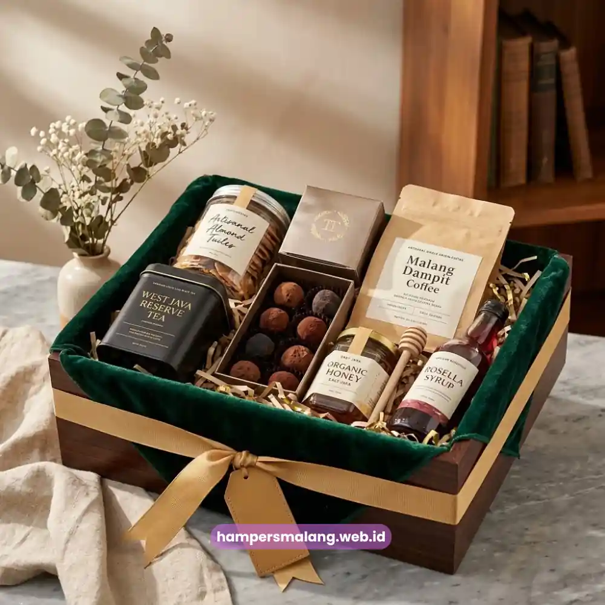
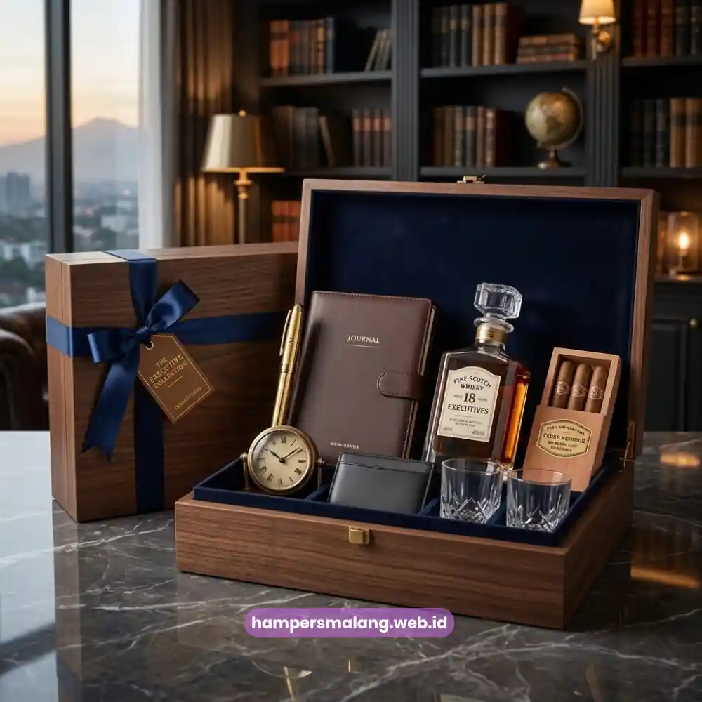

Isi hampers klien perusahaan yang elegan umumnya terdiri dari kombinasi produk kuliner premium, perlengkapan kerja eksekutif, dan sentuhan personalisasi yang mencerminkan identitas perusahaan.
Kombinasi ini dipilih bukan hanya karena kualitasnya, tetapi juga karena mampu menyampaikan pesan penghargaan secara halus dan profesional.
Semakin relevan isi hampers dengan kebutuhan dan gaya hidup klien, semakin besar kesan mewah yang tercipta.
- Produk kuliner premium menjadi pilihan populer untuk isi hampers klien.
- Perlengkapan kerja eksekutif memberikan kesan fungsional sekaligus elegan.
- Produk perawatan diri menambah nuansa personal pada hampers korporat.
- Personalisasi logo dan kartu ucapan memperkuat identitas perusahaan.
- Hampers Malang membantu menyusun kombinasi isi hampers yang sesuai kebutuhan Anda.
Apa yang Membuat Isi Hampers Klien Perusahaan Terasa Mewah?
Kesan mewah pada hampers tidak selalu ditentukan oleh jumlah produk yang disertakan, melainkan oleh kualitas, keselarasan tema, dan cara penyajiannya.
Hampers yang disusun dengan tema jelas dan produk yang saling melengkapi akan memberikan pengalaman membuka hadiah yang lebih memuaskan dibandingkan kumpulan produk acak dengan kuantitas besar.
Selain itu, detail kecil seperti pemilihan warna kemasan yang senada, penataan produk yang rapi, serta penggunaan material berkualitas turut memengaruhi persepsi kemewahan sebuah hampers.
Klien cenderung mengingat kesan visual dan sensasi saat membuka hampers, sehingga aspek presentasi memiliki peran yang sama pentingnya dengan isi di dalamnya.
Baca Juga: Ide Hampers Klien Perusahaan yang Membuat Bisnis Makin Dekat
Produk Kuliner Premium sebagai Pilihan Klasik nan Elegan
Produk kuliner premium seperti kopi dan teh pilihan, cokelat berkualitas tinggi, atau camilan sehat kerap menjadi pilihan utama dalam hampers klien perusahaan.
Produk kategori ini memiliki keunggulan karena dapat dinikmati bersama tim di lingkungan kerja klien, sehingga menciptakan momen berbagi yang memperkuat kesan positif terhadap perusahaan pengirim.
Pemilihan produk kuliner sebaiknya mempertimbangkan daya tahan dan kepraktisan penyimpanan, mengingat hampers sering kali diterima di lingkungan kantor dengan waktu konsumsi yang tidak selalu segera.
Produk dengan kemasan rapi dan tahan lama menjadi pilihan yang lebih aman untuk kategori ini.

Perlengkapan Kerja Eksekutif untuk Kesan Fungsional dan Profesional
Selain produk konsumsi, perlengkapan kerja eksekutif seperti notebook berbahan kulit, pena berkualitas, atau organizer meja kerja juga menjadi pilihan isi hampers yang relevan bagi klien korporat.
Produk kategori ini memiliki nilai fungsional tinggi karena dapat digunakan dalam aktivitas kerja sehari-hari, sehingga kehadiran perusahaan pemberi hampers akan terus diingat setiap kali produk tersebut digunakan.
Pemilihan perlengkapan kerja sebaiknya menghindari desain yang terlalu mencolok, dan lebih mengutamakan tampilan minimalis serta material berkualitas agar sesuai dengan lingkungan kerja profesional yang formal.
Sentuhan Perawatan Diri sebagai Nilai Tambah yang Personal
Produk perawatan diri seperti aromaterapi, lilin wangi, atau hand cream kini semakin sering dimasukkan ke dalam hampers korporat sebagai bentuk perhatian terhadap kesejahteraan penerima.
Kategori produk ini memberikan sentuhan personal yang berbeda dari hampers korporat pada umumnya, sekaligus menunjukkan bahwa perusahaan memperhatikan aspek kenyamanan klien di luar konteks bisnis semata.
Penggunaan produk perawatan diri sebaiknya tetap mempertimbangkan kenetralan aroma dan formulasi, agar dapat diterima oleh berbagai preferensi personal tanpa menimbulkan ketidaknyamanan.
Personalisasi sebagai Kunci Membedakan Hampers Anda
Personalisasi menjadi elemen penting yang membedakan hampers biasa dengan hampers yang benar-benar berkesan.
Penambahan logo perusahaan pada kemasan, kartu ucapan dengan pesan yang ditulis khusus, hingga pemilihan tema warna yang konsisten dengan identitas brand mampu menciptakan pengalaman yang lebih personal bagi klien penerima.
Detail personalisasi ini menunjukkan bahwa hampers tidak dibuat secara massal tanpa perhatian, melainkan dirancang khusus untuk klien tersebut, sehingga nilai emosionalnya menjadi jauh lebih tinggi dibandingkan hadiah generik.
Menyusun isi hampers klien perusahaan yang mewah dan elegan membutuhkan kombinasi yang tepat antara produk kuliner premium, perlengkapan kerja eksekutif, sentuhan perawatan diri, serta personalisasi yang mencerminkan identitas perusahaan.
Kombinasi ini akan menciptakan pengalaman membuka hampers yang berkesan dan meninggalkan citra profesional yang kuat.
Untuk mewujudkan hampers klien perusahaan dengan kombinasi isi yang elegan dan sesuai kebutuhan Anda, percayakan kepada Hampers Malang.
Konsultasikan kebutuhan hampers Anda sekarang dan dapatkan hampers eksklusif yang siap membekas di hati klien.
Tanya Jawab Seputar Isi Hampers Klien Perusahaan
Produk yang umum digunakan meliputi kuliner premium, perlengkapan kerja eksekutif, dan produk perawatan diri yang berkualitas.
Personalisasi sangat penting karena membuat hampers terasa lebih khusus dan mencerminkan identitas perusahaan pengirim.
Kesan mewah dapat dicapai melalui keselarasan tema, kualitas produk, serta presentasi kemasan yang rapi dan konsisten.

Konsultasikan Isi Hampers Anda
Solusi Elegan untuk Hampers Korporat di Jawa Timur.
Ditulis oleh Tim Maroon Souvenir
Sahabat mahasiswa dan pelaku bisnis di Malang Raya. Berpengalaman menangani merchandise event kampus, instansi pemerintahan, dan hotel berbintang di Batu.